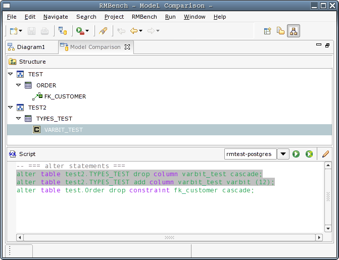
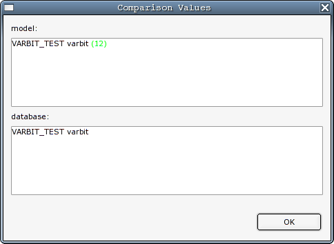

and
and Model comparison is a new and unique feature in RMBench that fills a need that we have heard expressed many times by database programmers and administrators. It allows you to compare the current design model against an existing database, to view the differences in a structured manner, and to review and execute DDL statements that will modify the existing database such that it mirrors the design model.
One idea behind this is to allow incremental development of the
database model, according to the following procedure:
You start the model comparison by checking the Diff option on the first page of
the Database
Export Wizard as described here.
You then select the target database from the
list below the checkbox. After optionally configuring the DDL generator
on the following page, and pressing the Finish button, you will see the Model Comparison Editor.

The Model Comparison Editor consists of 2 panes. You can double-click into the toolbar-area of each pane to maximize it within the editor.
The upper pane
shows a hierarchical summary of the changes. Items that were deleted
from the physical database are marked with a "-" sign, items that were
added bear a "+" sign. Items that were changed just bear their normal
icon. You can double-click on a changed item to see a dialog that shows
the change details. for example, double-clicking on the VARBIT_TEST
node in the view shown above will open ths following dialog:

the dialog shows that the VARBIT_TEST column was changed in the
design model by adding a size of 12.
Additionally, if you single-click on a leaf node in the hierarchy
pane, the corresponding DDL code will be highlighted in the lower pane.
note that for some changes, there will be more than one statement, as
there may be no way to perform the respective change in a single DDL
statement.
As in the other DDL editor, you can choose the database connection
and execute the script or the current statement using the and  buttons.
buttons.